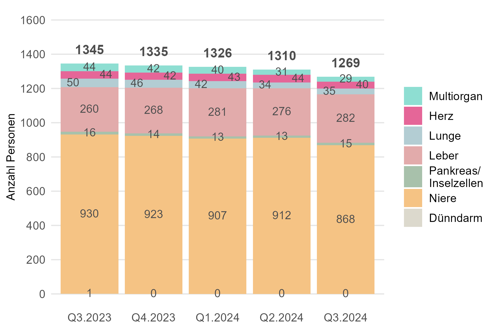
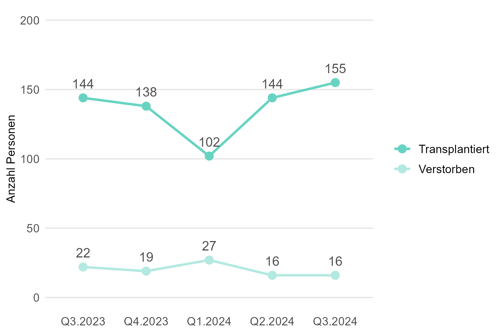
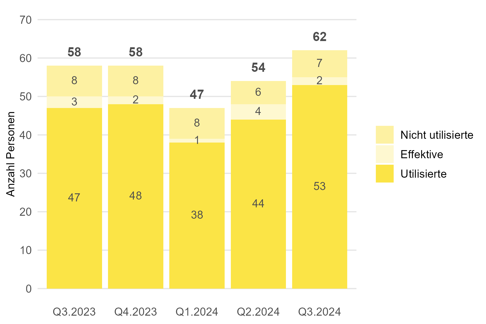
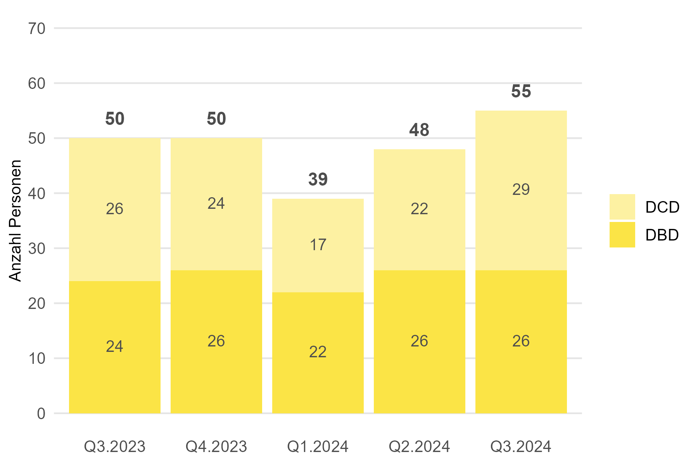
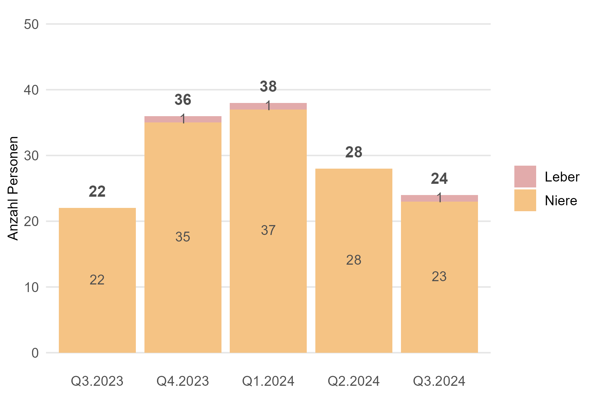
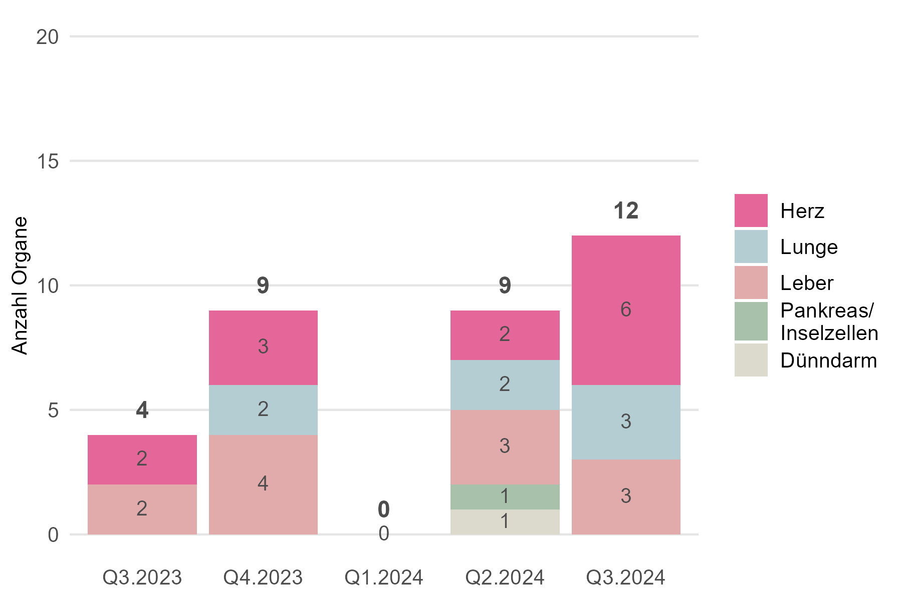
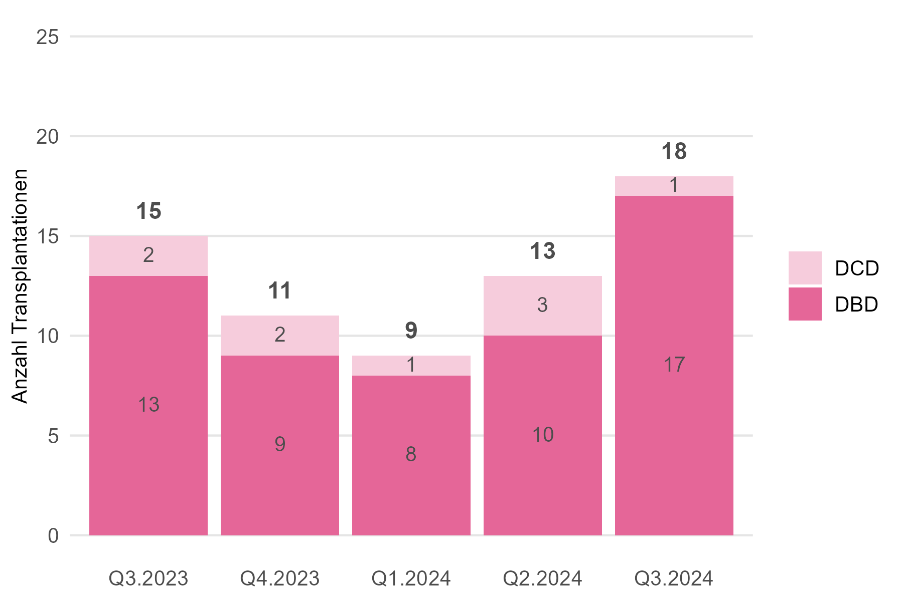
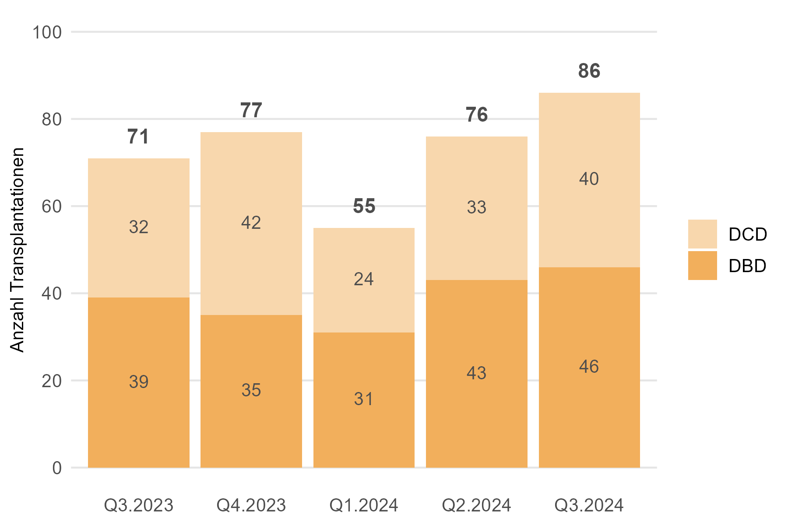
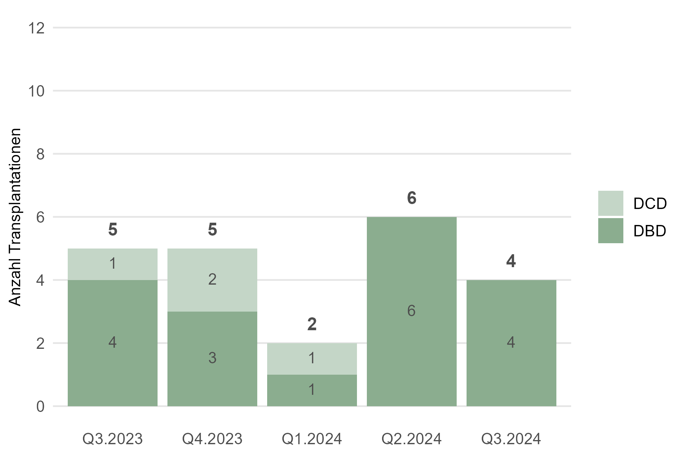

Mehr spendende verstorbene Personen und transplantierte Patientinnen und Patienten.
Die Wartezeiten bis zur Transplantation werden nicht mehr pro Quartal ausgewiesen, sondern neu nur noch einmal pro Jahr. Die Berechnung erfolgt nach einer neuen Methodik (siehe Abb. 4.13 Jahresbericht 2023). Die Kennzahlen zu den Wartezeiten pro Organ werden auf dieser Website publiziert.
1. Warteliste
Hier finden Sie Kennzahlen zur Warteliste der Personen, die in der Schweiz auf ein Organ von spendenden verstorbenen Personen warten. Personen, die für eine Lebendspende gelistet waren, sind in diesem Abschnitt nicht mitberücksichtigt.
Ende September 2024 warteten in der Schweiz 1269 Personen auf eines oder mehrere Organe von verstorbenen spendenden Personen. Im Vergleich zu Ende Juni 2024 sind das 41 Personen weniger (-3 %). 16 Personen sind im dritten Quartal 2024 auf der Warteliste verstorben, gleich viele wie im zweiten Quartal.
1.1 Personen auf der Warteliste

| Indikator | Letztes Quartal | Veränderung zum Vorquartal |
|---|---|---|
| Anzahl Personen auf der Warteliste | 1269 | -41 Personen (-3 %) |
| Anteil inaktive | 46 % | - 2 Prozentpunkte |
Ende letztes Quartal warteten in der Schweiz 1269 Personen auf eines oder mehrere Organe von verstorbenen spendenden Personen. Im Vergleich zum Vorquartal sind das 41 Personen weniger (-3 %). Fast die Hälfte (46 %) der Personen auf der Warteliste war im inaktiven Status.
1.2 Personen auf der Warteliste nach Organ

| Indikator | Letztes Quartal | Veränderung zum Vorquartal |
|---|---|---|
| Anzahl Personen auf der Warteliste (alle) | 1269 | -41 (-3 %) |
| Multiorgan | 29 | -2 (-6 %) |
| Herz | 40 | -4 (-9 %) |
| Lunge | 35 | +1 (+3 %) |
| Leber | 282 | +6 (+2 %) |
| Niere | 868 | -44 (-5 %) |
| Pankreas/Inselzellen | 15 | +2 (+13 %) |
| Dünndarm | 0 | +/- 0 |
Von den 1269 Personen auf der Warteliste wartete die grosse Mehrheit auf eine Niere (868; 68 %) oder eine Leber (282; 22 %). 29 Personen warteten auf mehr als ein Organ.
1.3 Ereignisse auf der Warteliste

| Indikator | Letztes Quartal | Veränderung zum Vorquartal |
|---|---|---|
| Anzahl transplantierte Personen | 155 | +11 (+8 %) |
| Anzahl verstorbene Personen | 16 | +/- 0 |
Im letzten Quartal erhielten in der Schweiz 155 Personen eines oder mehrere Organe aus einer Organspende nach dem Tod. 16 Personen sind auf der Warteliste verstorben, gleich viele wie im Vorquartal.
2. Organspende
Hier finden Sie Kennzahlen zur Organspende nach dem Tod und zur Organ-Lebendspende in der Schweiz.
Im dritten Quartal 2024 haben in der Schweiz 55 Personen ihre Organe nach dem Tod gespendet. Im Vergleich zum Vorquartal sind das 7 Personen mehr (+18 %). Von den 55 Personen waren 29 (53 %) im Hirntod nach Herz-Kreislauf-Stillstand. 160 Organe von verstorbenen spendenden Personen wurden in der Schweiz transplantiert, das sind 8 mehr (+5 %) als im Vorquartal. Mit 2.9 Organen ist die durchschnittliche Anzahl transplantierter Organe pro spendende verstorbene Person leicht gesunken.
2.1 Für eine Organspende nach dem Tod freigegebene Personen

| Indikator | Letztes Quartal | Veränderung zum Vorquartal |
|---|---|---|
| Anzahl freigegebene Personen | 62 | +8 Personen (+15 %) |
| Anteil Nicht utilisierte | 11 % | +/- 0 Prozentpunkte |
| Anteil Effektive | 3 % | -4 Prozentpunkte |
| Anteil Utilisierte | 85 % | +3 Prozentpunkte |
Im letzten Quartal hat Swisstransplant 62 Personen aus der Schweiz für eine Organspende nach dem Tod freigegeben. Das sind 8 Personen mehr als im Vorquartal. Die Utilisierungsrate betrug 85 %.
2.2 Spendende verstorbene Personen

| Indikator | Letztes Quartal | Veränderung zum Vorquartal |
|---|---|---|
| Anzahl spendende Personen (alle) | 55 | +7 (+15 %) |
| DCD | 29 (53 %) | +7 (+32 %) |
| DBD | 26 (47 %) | +/- 0 |
Im letzten Quartal haben in der Schweiz 55 Personen ihre Organe nach dem Tod gespendet. Im Vergleich zum Vorquartal sind das 7 Personen mehr (+15 %). Der Anstieg ist auf die Spende im Hirntod nach Herz-Kreislauf-Stillstand (DCD) zurückzuführen. Von den 55 spendenden verstorbenen Personen waren 29 (53 %) DCD.
2.3 Transplantierte Organe von spendenden verstorbenen Personen
| Indikator | Letztes Quartal | Veränderung zum Vorquartal |
|---|---|---|
| Anzahl transplantierte Organe (alle) | 160 | +8 (+5 %) |
| Herz | 18 | +5 |
| Lunge | 14 | -8 |
| Leber | 36 | +1 |
| Niere | 88 | +12 |
| Pankreas/Inselzellen | 4 | -2 |
Im letzten Quartal wurden in der Schweiz 160 Organe von spendenden verstorbenen Person transplantiert. Im Vergleich zum Vorquartal sind das 8 Organe mehr (+5 %).
2.4 Transplantierte Organe pro spendende verstorbene Person
| Indikator | Letztes Quartal | Veränderung zum Vorquartal |
|---|---|---|
| Organe pro spendende Person (alle) | 2.9 | -0.2 |
| DBD | 3.7 | +0.2 |
| DCD | 2.1 | -0.5 |
Im letzten Quartal wurden in der Schweiz durchschnittlich 2.9 Organe pro spendende verstorbene Person transplantiert. Im Vergleich zum Vorquartal sind das 0.2 Organe weniger.
2.5 Spendende lebende Personen

| Indikator | Letztes Quartal | Veränderung zum Vorquartal |
|---|---|---|
| Anzahl spendende Personen (alle) | 24 | -4 (-14 %) |
| Leber | 1 (4 %) | +1 |
| Niere | 23 (96 %) | -5 |
Im letzten Quartal haben in der Schweiz 24 lebende Personen eine ihrer Nieren oder einen Teil ihrer Leber gespendet. Das sind 4 Lebendspenden weniger (-14 %) als im Vorquartal.
3. Transplantationen
Hier finden Sie Kennzahlen zu Personen, die ein Organ von einer spendenden verstorbenen Person erhielten. Einerseits sind dies Personen in der Schweiz, die ein Organ von einer spendenden verstorbenen Person aus der Schweiz oder aus dem Ausland erhielten. Andererseits sind dies Personen im Ausland, die ein Organ von einer verstorbenen Person aus der Schweiz erhielten, wenn in der Schweiz für ein Organ keine passende Person gefunden werden konnte. Kennzahlen zur Lebendspende von Niere und Leber finden Sie unter 2.5.
Im dritten Quartal 2024 erhielten in der Schweiz 155 Personen eines oder mehrere Organe von spendenen verstorbenen Personen. Im Vergleich zum zweiten sind das 11 Transplantationen mehr (+8 %). Von den 155 Personen erhielten 14 Personen ein Organ aus dem Ausland.
3.1 In der Schweiz transplantierte Personen
| Indikator | Letztes Quartal | Veränderung zum Vorquartal |
|---|---|---|
| Anzahl transplantierte Personen (alle) | 155 | +11 (+8 %) |
| Multiorgan | 3 | -5 |
| Herz | 18 | +5 |
| Lunge | 14 | -8 |
| Leber | 36 | +4 |
| Niere | 83 | +16 |
| Pankreas/Inselzellen | 1 | -1 |
Im letzten Quartal erhielten in der Schweiz 155 Personen eines oder mehrere Organe von spendenden verstorbenen Personen. Im Vergleich zum Vorquartal sind das 11 Transplantationen mehr (+8 %). Im letzten Quartal erhielten 3 Personen mehr als 1 Organ, alle 3 Personen erhielten je eine Niere und eine Bauchspeicheldrüse (Pankreas).
3.2 In der Schweiz transplantierte Personen mit Organen aus dem Ausland
| Indikator | Letztes Quartal | Veränderung zum Vorquartal |
|---|---|---|
| Anzahl transplantierte Personen mit Organen aus dem Ausland | 14 | +/-0 |
Im letzten Quartal erhielten in der Schweiz 14 Personen Organe von spendenden verstorbenen Personen aus dem Ausland. Das sind gleich viele wie im Vorquartal.
3.3 Im Ausland transplantierte Personen

| Indikator | Letztes Quartal | Veränderung zum Vorquartal |
|---|---|---|
| Anzahl transplantierte Personen im Ausland | 12 | +3 (+33 %) |
Im letzten Quartal erhielten im Ausland 12 Patientinnen und Patienten Organe von spendenden verstorbenen Personen aus der Schweiz. Im Vergleich zum Vorquartal sind das 3 Patientinnen und Patienten mehr (+33 %).
3.4 Herztransplantationen

| Indikator | Letztes Quartal | Veränderung zum Vorquartal |
|---|---|---|
| Anzahl Herztransplantationen (alle) | 18 | +5 (+38 %) |
| DCD | 1 (6 %) | -2 |
| DBD | 17 (94 %) | +7 |
Im letzten Quartal erhielten in der Schweiz 18 Personen eine Herztransplantation. Im Vergleich zum Vorquartal sind das 5 Herztransplantationen mehr (+38 %).
3.5 Lungentransplantationen
| Indikator | Letztes Quartal | Veränderung zum Vorquartal |
|---|---|---|
| Anzahl Lungentransplantationen (alle) | 14 | -8 (-36 %) |
| DCD | 2 (27 %) | -4 |
| DBD | 12 (73 %) | -4 |
Im letzten Quartal erhielten in der Schweiz 14 Personen eine Lungentransplantation. Im Vergleich zum Vorquartal sind das 8 Lungentransplantationen weniger (-36 %).
3.6 Lebertransplantationen
| Indikator | Letztes Quartal | Veränderung zum Vorquartal |
|---|---|---|
| Anzahl Lebertransplantationen (alle) | 36 | +1 (+3 %) |
| DCD | 14 (37 %) | +1 |
| DBD | 22 (63 %) | +/-0 |
Im letzten Quartal erhielten in der Schweiz 36 Personen eine Lebertransplantation aus einer Organspende nach dem Tod. Im Vergleich zum Vorquartal ist das 1 Lebertransplantation mehr (+3 %).
3.7 Nierentransplantationen

| Indikator | Letztes Quartal | Veränderung zum Vorquartal |
|---|---|---|
| Anzahl Nierentransplantationen (alle) | 87 | +11 (+14 %) |
| DCD | 40 (46 %) | +7 |
| DBD | 47 (54 %) | +4 |
Im letzen Quartal erhielten in der Schweiz 87 Personen eine Nierentransplantation aus einer Organspende nach dem Tod. Im Vergleich zum Vorquartal sind das 11 Nierentransplantationen mehr (+14 %).
3.8 Pankreas/Inselzellen-Transplantationen

| Indikator | Letztes Quartal | Veränderung zum Vorquartal |
|---|---|---|
| Anzahl Pankreas-/Inselzellen-Transplantationen (alle) | 4 | -3 (-43 %) |
| DCD | 0 (0 %) | -1 |
| DBD | 4 (100 %) | -2 |
Im letzten Quartal erhielten in der Schweiz 4 Personen eine Pankreas/Inselzellen-Transplantation. Im Vergleich zum Vorquartal sind das 3 Transplantationen weniger (-43 %).